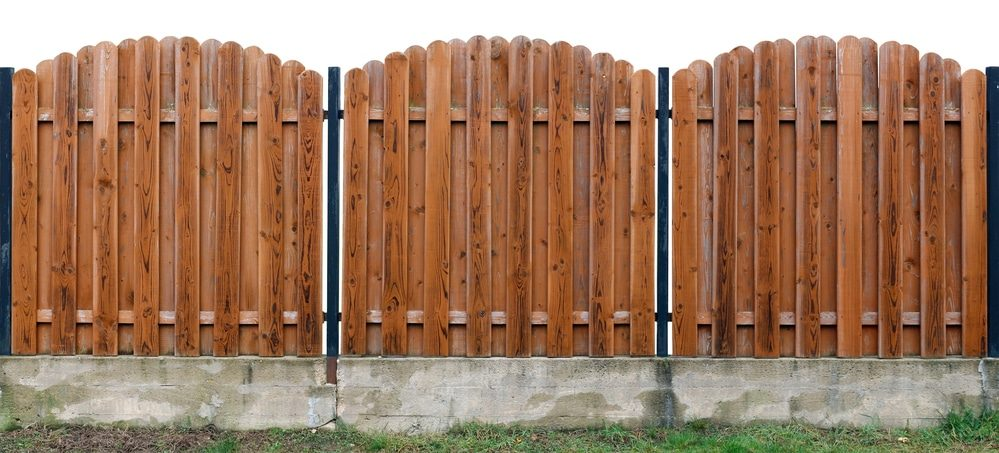

In This Guide
- Four wood fence styles cover most homes: picket, privacy, horizontal slat, and ranch, and each suits a different look and purpose.
- Start with your home's architecture, then weigh how much privacy, security, and upkeep you want.
- Louisiana humidity and wind affect both the wood you choose and how open or solid the design should be.
- Placement, landscaping, and small details like post caps and stain tie the fence to the house.
A fence is one of the first things people see when they look at your home. It frames the property, sets its tone, and either supports the architecture behind it or works against it. Wood gives you more style choices than almost any other material.
This guide from Big Easy Fence walks through the main wood fence styles, the questions that help you choose between them, and the small design decisions that make a fence feel like it belongs to your home.
Four Wood Fence Styles to Know
Most residential wood fences are a version of one of four styles. Each one has its own character, so it helps to see them side by side.
Traditional Picket Fences
Spaced vertical boards, often with pointed or rounded tops, give the picket fence its welcoming, classic look. It suits cottages, Victorian homes, and front yards where you want a defined boundary without blocking the view. Height and spacing vary, so a picket fence can lean cozy or formal depending on the details.
Privacy Fences
Privacy fences use tall, solid panels to screen the yard from neighbors and the street. They suit backyards, pools, and anywhere you want seclusion and a sense of security. A lattice top or decorative cap breaks up the solid line and gives the fence a more finished look.

Horizontal Slat Fences
Horizontal slats run sideways instead of up and down, which gives the fence a clean, modern line. The style pairs well with contemporary and mid-century homes, and it can be built with gaps or as a solid screen. If you are weighing the layout, our post on horizontal versus vertical fences compares the two.
Ranch-Style Fences
Ranch-style fences use rails and open spacing, and they bring a relaxed, country look to rural and larger suburban lots. Natural wood texture is a big part of the appeal. They mark a boundary and give animals or children room to roam, but they offer little privacy.
Matching a Style to Your Home
Your architecture is the best guide. This table gives a starting point, and you can mix and match from there.
| Home Style | Fence Style to Try | Why It Works |
|---|---|---|
| Cottage or Victorian | Picket | The classic shape echoes traditional trim and details |
| Contemporary or Mid-Century | Horizontal Slat | Clean lines match modern rooflines and windows |
| Suburban Family Home | Privacy | Solid panels give the backyard seclusion |
| Rural or Large Lot | Ranch | Open rails suit wide spaces and natural surroundings |
Questions That Shape Your Choice
How Much Privacy and Security?
Decide what the fence is for. If you want to keep the yard private, a solid style is the answer. If you want to keep pets in and mark the line, an open style does it. Height matters too, since taller fences discourage casual access and block more of the view.
Which Wood and How Much Upkeep?
The wood you choose affects how often you will be sealing and repairing. Some species resist rot and insects better than others, and our guide to the type of wood fence that lasts the longest can help you compare. Whatever you pick, plan on a regular finish and a yearly inspection.
How Will It Handle Louisiana Weather?
Heat, humidity, and heavy rain are hard on wood, so look for good drainage, rot-resistant materials, and a sealed finish. Wind matters too. A fully solid fence catches more wind than one with small gaps, so weigh privacy against how exposed your lot is.
Placement and Layout
A good fence sits in the right place. Confirm your property line before anything goes up, and check parish, city, and HOA rules for height limits and setbacks. Think about gates early, since the location and width of an opening affect how you use the yard.
Layout also shapes the look. A fence that follows the natural contours of the lot and lines up with the house looks intentional. One that wobbles or stops at odd places does not.
Finishing Touches That Make It Yours
- Post caps and finials. They protect the top of each post and add a decorative detail.
- Stain or paint. Stain shows off the grain, while paint gives you a wider color range and can match the trim on your house.
- Lattice tops. A lattice section softens a tall fence and adds a decorative layer.
- Landscaping. Shrubs, vines, and flower beds soften the line where the fence meets the yard. Leave some space so air can circulate and moisture does not collect against the wood.
Stand across the street and picture the fence next to your home. If the style, color, and height look like they belong together, you are on the right track.
Making the Final Choice
The right wood fence balances your home's style, your need for privacy, and the upkeep you are willing to do. Compare a few options on our fence types page, and consider how each one will look in your yard through every season.
When you are ready to move forward, our residential fencing team can go over styles and materials with you and put together an estimate.
Ready to Choose a Wood Fence Style?
Tell us about your home and how you use your yard, and we will help you narrow down the style and wood that fit.